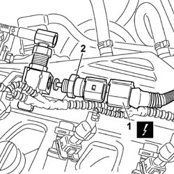

1058A46 CNG PRESSURE/TEMPERATURE SENSOR ON SINGLE MANIFOLD PIPE - R.R.
- Path
- Procedures > 10 ENGINE UNIT > 1058 GAS CIRCUIT > 1058A GAS CIRCUIT MULTI POINT INJECTION > 1058A46 CNG PRESSURE/TEMPERATURE SENSOR ON SINGLE MANIFOLD PIPE - R.R.
- Kind
- repair procedure (removal / refitting; the operation number is the code)
- Applies to
- engines: 1.6 16v; production: da 06/04; only with equipment: BIPOWER
- Interactive page
- https://sloeber94.github.io/elrnDB-fMltpl/en/#/186007249
Applies to: engines: 1.6 16v; production: da 06/04; only with equipment: BIPOWER
 Removing
Removing
 Refitting
RefittingPosition the vehicle on a lift.
Drain the low pressure circuit as described in the operation
Op. 1042A02 C.N.G. - FUEL SYSTEM SAFETY CHECK
1. Disconnect the electrical connection for the methane temperature and pressure sensor.
Description | Connector |
|---|---|
Methane pressure/temperature sensor | K57 |
2. Undo the methane pressure and temperature sensor and remove it from the CNG single manifold.

Applies to: engines: 1.6 16v; production: da 06/04; only with equipment: BIPOWER
Refitting
RemovingFit the methane pressure and temperature sensor in the housing on the CNG single manifold.
Connect the electrical connection for the methane temperature and pressure sensor.
Description | Connector |
|---|---|
Methane pressure/temperature sensor | K57 |
Move the CNG cut-off solenoids to open position by hand and check system is efficient.
Remove the vehicle from the lift.
Op. 1042A06 C.N.G. - FUEL SYSTEM CHECK FOR ANY LEAKS USING ELECTRONIC DETECTOR FOLLOWING OPERATIONS